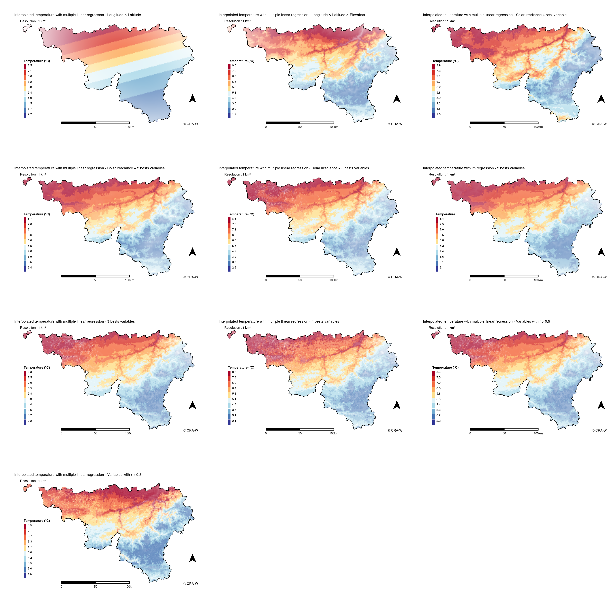

Introduction
1
Presentation of the AGROMET project and the CRA-W
1.1
CRA-W and Farming Systems, Territory and Information Technologies Unit
1.2
The AGROMET project
1.2.1
Context
1.2.2
Objectives
1.2.3
Importance of the internship for the project
1.2.4
Preparing the working environment
2
Data acquisition and explanatory variables
2.1
Interest variables
2.2
Explanatory variables
2.2.1
Static variables
2.2.2
Dynamic Variables
3
Data organisation and modeling
3.1
Data organisation
3.2
Modeling
3.2.1
Principle of machine learning
3.2.2
Machine learning approach in the AGROMET project
3.2.3
Machine Learning in R
4
Results and discussion
4.1
Benchmark
4.1.1
Methodology
4.1.2
Comparison of methods
4.1.3
Vizualisation
4.2
Discussion
Conclusion
Annex
A
Resources on AGROMET and my work
B
Annex 2
C
Additional resources
D
Details of my work
References
Published with bookdown
Internship report
B
Annex 2
Example of outputs with different methods, 2018-03-07 14:00:00
